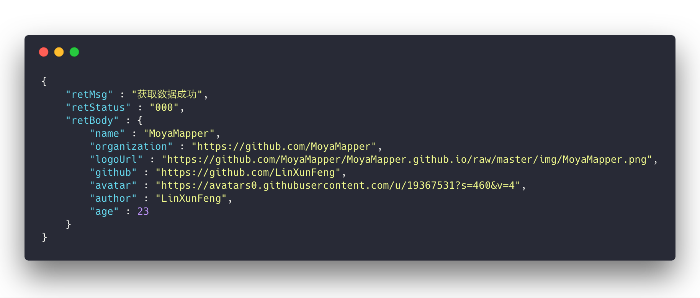

Core-mapObject¶
/// Response -> Model
///
/// - Parameters:
/// - type: 模型类型
/// - modelKey: 模型数据路径
/// - Returns: 模型
func mapObject<T: Modelable>(_ type: T.Type, modelKey: String? = nil) -> T
Response转换为 遵守Modelable协议的Model
type遵守了Modelable协议的模型类型modelKey指定取值路径，可以设置多级，如retBody>name，如果为nil，则取当前Response下ModelableParameterType的modelKey
ps: 当前Response 的 ModelableParameterType 可以通过 MoyaMapperPlugin 进行统一设置
Example¶

struct MMModel: Modelable {
var name : String
var organization : String
var logoUrl : String
var github : String
var avatar : String
var author : String
var age : Int
init(_ json: JSON) {
name = json["name"].stringValue
organization = json["organization"].stringValue
logoUrl = json["logoUrl"].stringValue
github = json["github"].stringValue
avatar = json["avatar"].stringValue
author = json["author"].stringValue
age = json["age"].intValue
}
}
转模型
// 如果不传 modelKey，则取当前 response 下 ModelableParameterType 的 modelKey
let model = response.mapObject(MMModel.self, modelKey: "retBody")
print("name -- \(model.name)")
print("github -- \(model.github)")
print("author -- \(model.author)")
print("age -- \(model.age)")
打印结果
name -- MoyaMapper
github -- https://github.com/LinXunFeng
author -- LinXunFeng
age -- 23